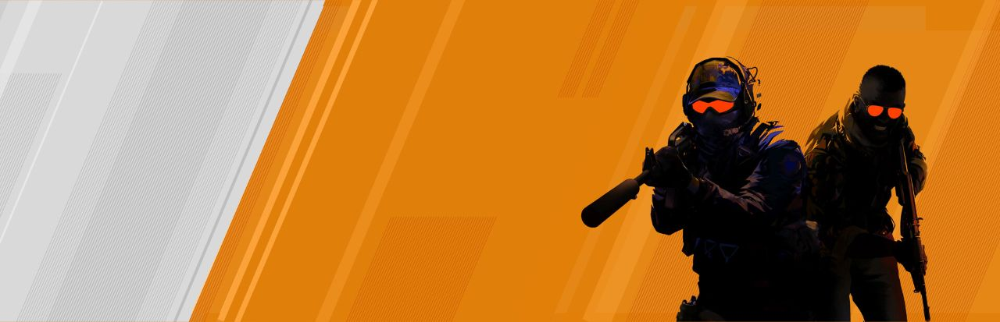
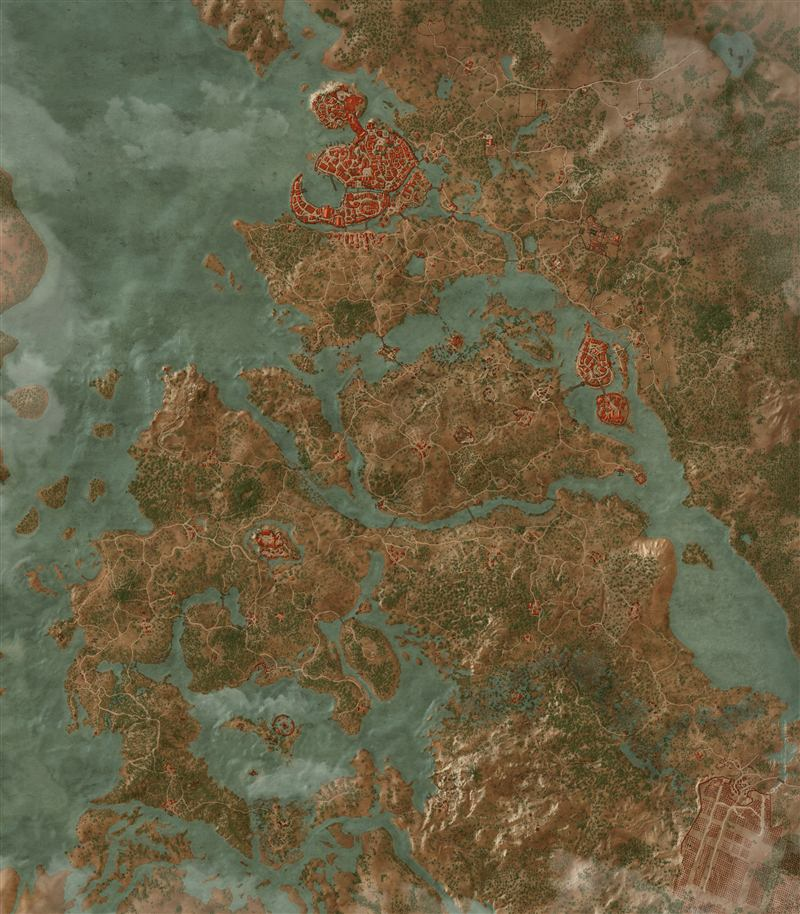

Oyunlarını keşfet
Şampiyonlar, rünler ve eşya dizilimleri; haritalar, infolar ve smoke videoları. Hepsi tek yerde, Türkçe.
Oyunlar
League of Legends
Tüm şampiyonların pasifleri, Q/W/E/R yetenekleri ve eşyalar.

Counter-Strike 2
9 rekabetçi harita: radar üzerinde infolar; A, B ve Orta için smoke, flash, molotof ve el bombası videoları.
Ajanlar · Haritalar · İnfolar


Valorant
Tüm ajanların yetenekleri ve rekabetçi haritalar: radar üzerinde infolar.
Katiller · Survivor'lar · Perkler · Haritalar


Dead by Daylight
Katillerin güçleri, perkler ve oyun içi videoları; haritalarda jeneratör noktaları.
 Kahramanlar · Trinket'lar · Bosslar · Eşyalar
Kahramanlar · Trinket'lar · Bosslar · Eşyalar
Darkest Dungeon
Darkest Dungeon ve Darkest Dungeon II: kahramanların becerileri, trinket'lar, bosslar ve eşyalar.
Operatörler · Silahlar · Haritalar


Rainbow Six Siege
Operatörlerin özel yetenekleri ve videoları, silah değerleri; haritalarda kat planları ve bomba yerleri.
 Harita · Krallıklar · Birlikler · Rehber
Harita · Krallıklar · Birlikler · Rehber
Mount & Blade II: Bannerlord
Calradia haritası, köylerin ürünleri ve atölye önerileri, birlik ağaçları ve başlangıç rehberi.
 Harita · Krallıklar · Yoldaşlar · Rehber
Harita · Krallıklar · Yoldaşlar · Rehber
Mount & Blade: Warband
İşaretli Calradia haritası, birlik ağaçları, kavga etmeyen yoldaş takımı kurma ve başlangıç rehberi.

Harita · Canavarlar · RehberThe Witcher 3: Wild Hunt
İşaretli bölge haritaları (tabelalar, güç yerleri, hazineler), canavarların zayıflıkları ve sonu belirleyen kararlar.
 Harita · Silahlar · İkonikler
Harita · Silahlar · İkonikler
Cyberpunk 2077
Night City haritası, tüm silahlar ve ikonik silahların nerede bulunduğu: haritada yeri ve kısa videosu.
 Karakter · Silahlar · Harita · Rehber
Karakter · Silahlar · Harita · Rehber
Project Zomboid
Meslek ve özellik planlayıcı, silah değerleri, Knox Country kasaba haritası ve başlangıç rehberi.
 Harita · Şirketler · Rehber
Harita · Şirketler · Rehber
Sea of Thieves
Izgara koordinatlı ada haritası, hangi ganimetin kime satıldığı, gemiler ve başlangıç rehberi.
 Karakterler · Silahlar · Eşyalar · Rehber
Karakterler · Silahlar · Eşyalar · Rehber
Brotato
Karakterlerin özellikleri, silahların dört seviyedeki değerleri, eşyalar ve başlangıç rehberi.
Battlefield 1
Birinci Dünya Savaşı: 85 silahın değerleri ve 31 harita.
 Silahlar · Haritalar
Silahlar · Haritalar
Battlefield 2
modern savaş (2005): 62 silahın değerleri ve 30 harita.
 Silahlar · Haritalar
Silahlar · Haritalar
Battlefield 3
modern savaş (2011): 68 silahın değerleri ve 26 harita.
 Silahlar · Haritalar
Silahlar · Haritalar
Battlefield 4
modern savaş (2013): 110 silahın değerleri ve 34 harita.
 Silahlar · Haritalar
Silahlar · Haritalar
Battlefield V
İkinci Dünya Savaşı: 80 silahın değerleri ve 21 harita.
 Silahlar · Haritalar
Silahlar · Haritalar
Battlefield 6
modern savaş (2025): 62 silahın değerleri ve 17 harita.
Yakında
Yeni oyunlar eklenecek.
Aramana uyan oyun bulunamadı.